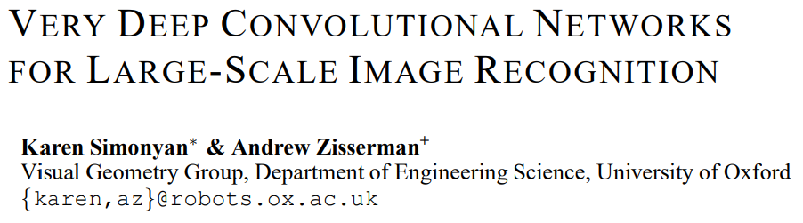
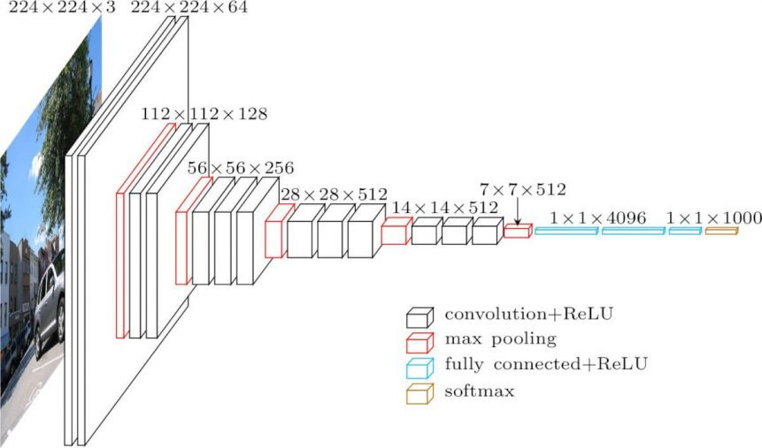
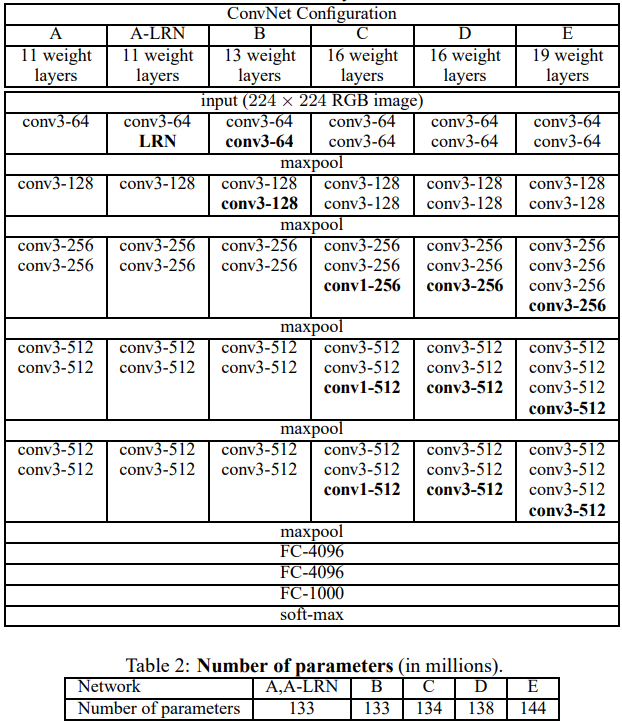
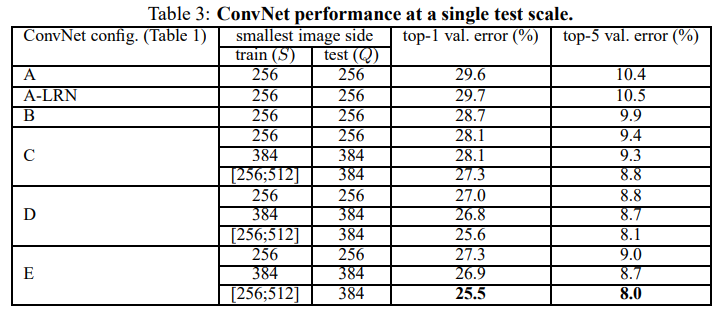
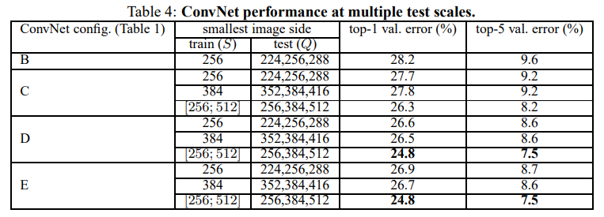
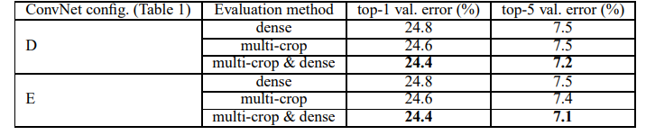
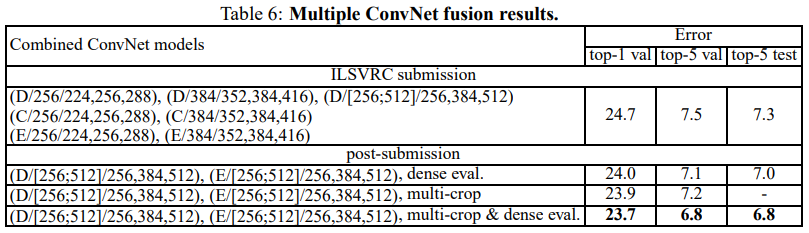

더보기
딥러닝 논문 리뷰 VGGNet 논문 리뷰

Very Deep Convolutional Networks for Large-Scale Image Recognition
↑ 논문 링크 ↑
Abstract
VGGNet은 ILSVRC 2014 대회에서 2등을 차지한 CNN 모델
모델의 성능에 '네트워크의 깊이'가 중요함을 보여줌
이미지 특징을 추출하는 기본 네트워크 모델로 활용
많은 메모리를 이용하여 연산한다는 단점
ConvNet Configurations
Architecture

Input은 224 x 224 RGB 이미지로 고정
전처리 - 각 픽셀에서 train set 평균 RGB 값 빼기
3 x 3 필터 ConvNet, 비선형성을 위해 1 x 1 convolutional filter, stride=1, padding 적용
일부 conv layer에는 max-pooling layer(2 x 2, stride=2)
마지막 Fully-connected layer(FC layer) 3개(4096, 4096, 1000)로 인해 많은 파라미터
모든 활성화 함수는 ReLU
-> VGGNet의 단점: 파라미터 개수가 너무 많다
Configurations
11 ~ 19 깊이로 실험, channels은 각 max-pooling 이후 2배씩 증가하여 최대 512까지 증가

Discussion
- 기존 7 x 7 보다 작은 필터 (3 x 3, stride=1) 사용해서 파라미터 수 감소
3 x 3 convolutional filter를 2개 이용하면 5 x 5, 3개 이용하면 7 x 7
C개의 channel를 가진 3개의 3x3 filter를 이용하면 연산량은 27C^2,
C 개의 channel를 가진 1개의 7x7 filter를 이용하면 연산량은 49C^2
7 x 7 대신 3 x 3을 사용하면 3개의 relu를 이용 가능 (비선형성 증가), 파라미터 수 감소 (49 -> 27, regularization 효과)
+) 3 x 3 필터: 방향성을 보여줄 수 있는 필터 중 가장 작은
+) 7 x 7 쓰는게 속도는 더 빠름, ReLU가 연산 느림
- 1 x 1 conv later -> 비선형성
입출력 channel이 동일할 때 1 x 1 이용하면 ReLU 함수를 거치면서 비선형성 추가
Classification Framework
Training
momentum을 가진 mini-batch gradient descent
batch size = 256, momentum = 0.9, weight decay = 0.00005, epoch = 74, learning rate = 0.01(10배씩 감소)
- pre-initialisation
학습 속도 및 안정성에 영향
가장 얕은 구조인 A를 먼저 학습, 이 때 가중치는 평균=0, 분산=0.01 정규 분포에서 무작위 추출
첫 번째, 네 번째 conv layer와 FC layer 3개의 가중치를 이용해 다른 모델 학습
-> 더 적은 epoch로 학습
논문 제출 후 Glorot&Bengio (2010)의 무작위 초기화 절차를 이용하여 사전 훈련 없이 가중치를 초기화하는 것이 가능하다는 것을 알아냄
- data augmentation
- crop 후 이미지를 수평 방향으로 무작위 뒤집기
+) 수직 방향으로 뒤집기는 사진 특성상 잘 쓰지 않았음 (뒤집어진건 어색하니까)
- RGB 값 무작위 변경
- image rescaling
single scale에서는 training scale(S) 256, 384 두 개로 고정
multi scale에서는 input size를 256 ~ 512 범위로 무작위 resize, 이를 scale jittering 이라고 함
-> 데이터 수 증가로 overfitting 방지, 다양한 크기의 object 학습으로 정확도 향상
Testing
마지막 FC layers를 conv layers로 변환하여 사용 (7 x 7, 1 x 1, 1 x 1), 이를 Fully-convolutional networks라고 부름
conv layer로만 구성되면 input size 제약이 없음,
Implementation Details
4-GPU system, 학습 시간 2-3주, single GPU 보다 3.75배 빠름
Classification Experiments
Dataset: 1000개 클래스 이미지 (train - 1.3M, val - 50K, test - 1000K)
실험에서는 val을 test로 이용
Single Scale Evaluation

- AlexNet에서의 LRN은 효과 없음
- 깊이가 깊어질 수록 error 감소
- 3 x 3 2개가 5 x 5 1개보다 error 7% 낮음 (top-1 error 기준)
- 256 ~ 512 다양한 scale로 resize 한 것이 고정된 scale 보다 성능 좋음
Multi Scale Evaluation

- 256 ~ 512 다양한 scale로 resize 한 것이 고정된 scale 보다 성능 좋음
- single scale 보다 multi scale 성능이 좋음
Multi Crop Evaluation

- dense와 multi crop을 각각 적용했을 때는 grid 크기 문제로 multi crop이 성능이 좋음
- dense와 multi crop을 같이 적용하면 가장 성능이 좋음
ConvNet fusion

- 모델 7개를 앙상블 했을 때보다 모델 2개를 앙상블 했을 때 성능이 좋음
Conclusion
모델이 깊어지니 (최대 19층) 성능이 좋아지더라